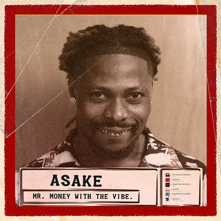

Naissance: 13 janvier 1995 (29 ans)
Lagos ou Lagos
Pseudonyme:Asake Nationalité: Nigériane
Formation: Université Obafemi-Awolowo (baccalauréat universitaire)
Activités: Auteur-compositeur, chanteur, musicien
Période d'activité: Depuis 2018
Taille: 1,83 m
Cheveux: Noir
yeux: Brun
Labels: YBNL Nation (en) (2022), Empire Distribution (2022)

Ahmed Ololade né le 13 janvier 1995, connu professionnellement sous le nom d' Asake , est un chanteur et compositeur afrobeats nigérian. Il est signé par YBNL Nation et Empire Distribution. Son nom de scène rend hommage à sa mère, dont le prénom est Asake .